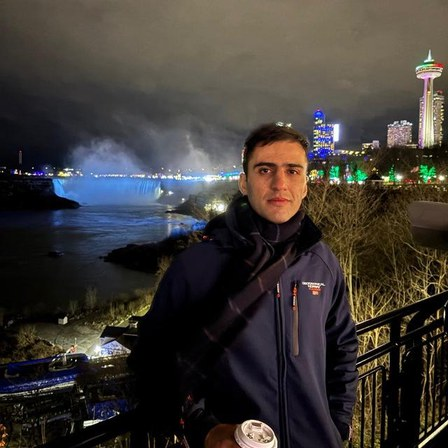

Personal Growth
Developing ourselves through the Word and various activities, and applying it in our daily life.
A non-denominational Bible institution rooted in missionary work from Germany — walking with youth in Korea and around the world since 2014.
Who we are
Spring of Life began with missionary work from Germany. From those roots, SL has continued to expand internationally, reaching youth and communities across Africa, South America, and Asia — including Korea.
Since 2014, SL has been on campuses in Korea encouraging young people to read the Bible for themselves. Today we work alongside international churches here, including New Hope Church and Shining Light Church.
What we stand for
Developing ourselves through the Word and various activities, and applying it in our daily life.
Turning the Word into action in society, our community, and around the world.
Inspiring positive change and making a meaningful impact globally through the Word.
We work alongside international churches in Korea, including New Hope Church and Shining Light Church.
Programs
Stories
“I was a non-believer, and I had a lot of doubts about religion and the Bible. But through SL, I started to see that the Bible actually makes sense and that God has a purpose for my life.”

“I wasn’t a Christian, but after learning God’s Word through SL, I began to understand why I went through those experiences and realized how blessed I am.”
No background in the Bible required. Grow together with a mentor and find peace through God in just three sessions.